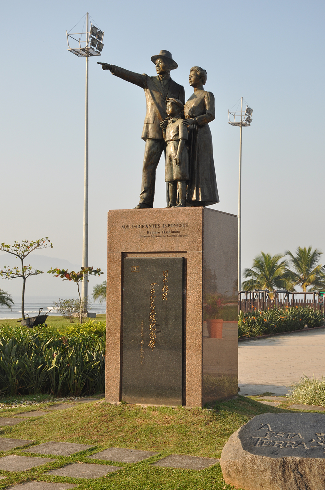

Federação das Associações de Províncias do Japão no Brasil
Fundada em 1966, a KENREN é uma entidade que visa incentivar e apoiar os emigrantes japoneses, preservar e divulgar a cultura japonesa, fortalecer os kenjinkais das 47 províncias.
Saiba Mais
Federação das Associações de Províncias do Japão no Brasil
Fundada em 1966, a KENREN é uma entidade que visa incentivar e apoiar os emigrantes japoneses, preservar e divulgar a cultura japonesa, fortalecer os kenjinkais das 47 províncias.
Saiba MaisFundada em 1966, a KENREN é uma entidade que visa incentivar e apoiar os emigrantes japoneses, preservar e divulgar a cultura japonesa, fortalecer os kenjinkais das 47 províncias.
A federação trabalha para manter viva a tradição e os valores culturais japoneses no Brasil, promovendo eventos, atividades culturais e fortalecendo os laços entre as comunidades.


Construção do Memorial em Homenagem aos Imigrantes Pioneiros Falecidos - Ireihi (Parque Ibirapuera / SP)

De 18 de junho de 1908, quando a primeira leva de imigrantes desembarcou no porto de Santos, do Kasato Maru, até 27 de março de 1973, aproximadamente 240.000 japoneses migraram-se para Brasil.
Foi sugerida a construção do Monumento do Desembarque de Imigrantes Japoneses em Santos, na ocasião do 90º. Aniversário da Imigração Japonesa, local considerado como ponto de origem da imigração japonesa ao Brasil.
Em 21 de junho de 1998, o Monumento foi solenemente inaugurado na Ponta da Praia.

Festival do Japão (Expo / SP) - O maior evento de cultura japonesa da América Latina
Os Kenjinkais são associações formadas por pessoas originárias da mesma província do Japão. A KENREN reúne e fortalece os kenjinkais das 47 províncias japonesas no Brasil.

📍 Parque Ibirapuera, São Paulo - SP
Memorial em Homenagem aos Imigrantes Pioneiros Falecidos, localizado no coração do Parque Ibirapuera.
📍 Santos, São Paulo - SP
De 18 de junho de 1908, quando a primeira leva de imigrantes desembarcou no porto de Santos, do Kasato Maru, até 27 de março de 1973, aproximadamente 240.000 japoneses migraram-se para Brasil.
Foi sugerida a construção do Monumento do Desembarque de Imigrantes Japoneses em Santos, na ocasião do 90º. Aniversário da Imigração Japonesa, local considerado como ponto de origem da imigração japonesa ao Brasil.
Em 21 de junho de 1998, o Monumento foi solenemente inaugurado na Ponta da Praia.
Não perca os eventos dos Kenjinkais!
11:00 – 17:00
📍 Indaiatuba, R. Goiás - Cidade Nova II, Indaiatuba - SP
Mais Informações11:00 – 21:00
📍 São Paulo Expo, Rod. dos Imigrantes, 1 - 5 km - Vila Água Funda, São Paulo - SP
O maior evento de cultura japonesa da América Latina chega à sua 27ª edição, reunindo tradições, gastronomia, arte e tecnologia em um só lugar.
Veja MaisAv. Bernardino de Campos, 98
SP - CEP: 12345-678
info@kenren.org.br
(11) 3456-7890